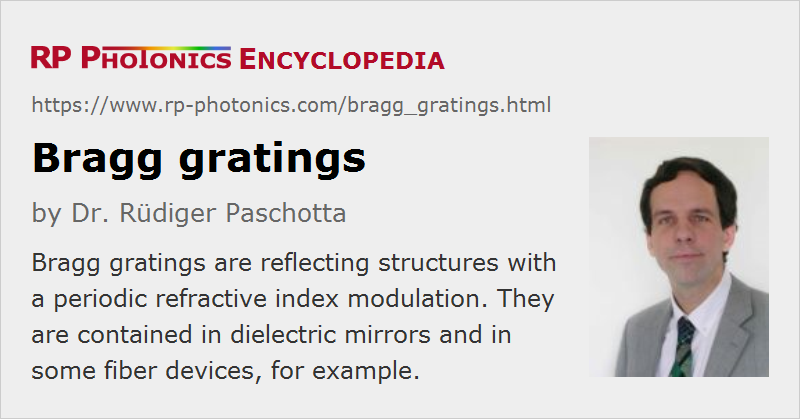

Bragg Gratings
Definition: reflecting structures with a periodic refractive index modulation
More specific terms: fiber Bragg gratings, volume Bragg gratings, holographic bulk gratings
German: Bragg-Gitter
How to cite the article; suggest additional literature
Author: Dr. Rüdiger Paschotta
An optical Bragg grating is a transparent device with a periodic variation of the refractive index, so that a large reflectance (reflectivity) may be reached in some wavelength range (bandwidth) around a certain wavelength which fulfills the Bragg condition
where λ is the vacuum wavelength of light, n the average refractive index of the medium, θ the propagation angle in the medium relative to the direction normal to the grating, and Λ the grating period. If this condition is met, the wavenumber of the grating matches the difference of the wavenumbers of the incident and reflected waves.
Other wavelengths are only weakly affected by the Bragg grating, except for some side lobes in the reflection spectrum. Similarly, the reflection can nearly totally disappear when the angle of incidence is modified (see Figure 1).
Around the Bragg wavelength, even a weak index modulation can be sufficient for achieving nearly total reflection, if the grating is sufficiently long. Due to the wavelength dependence of reflection and transmission, a Bragg grating can serve as an optical filter.
Examples of Optical Bragg Gratings
- Bragg gratings made in a bulk piece (e.g. of some glass or polymer), usually by irradiation of a photosensitive glass with coherent ultraviolet light which is spatially modulated using an interference pattern, are called volume Bragg gratings (Figure 1). Their reflection bandwidth is much smaller than that of dielectric thin-film mirrors, since they have a low refractive index contrast, which is compensated with a correspondingly longer interaction length. (Peak reflectivities of 99.9% are possible.) Volume Bragg gratings can be used e.g. as output couplers for laser diodes; the small reflection bandwidth (e.g. below 0.1 nm) can then lead to a narrow emission bandwidth (linewidth) and a low temperature dependence of the emission wavelength, which can facilitate the pumping of solid-state lasers. One can also insert a volume Bragg grating into the laser resonator of a solid-state laser in order to stabilize or tune its emission wavelength. For high intracavity powers (e.g. tens of watts), however, detrimental thermal effects can occur, such as a shift of the reflection band and a decrease of reflectance. For not too high power levels, volume Bragg gratings can also be used in spectral beam combining.
- There are fiber Bragg gratings, made in optical fibers. These can reflect light in fibers, or lead to various kinds of mode coupling in multimode fibers. Fiber Bragg gratings are used e.g. for fixing the wavelengths of fiber lasers, for filtering out certain wavelength components, for gain flattening of fiber amplifiers, and in fiber-optic sensors.
- There are also laser diodes with built-in Bragg gratings (based on semiconductor technology) for narrowing and stabilization of the emission wavelength (→ distributed Bragg reflector lasers, distributed feedback lasers).
Suppliers
The RP Photonics Buyer's Guide contains 27 suppliers for Bragg gratings. Among them:
Questions and Comments from Users
Here you can submit questions and comments. As far as they get accepted by the author, they will appear above this paragraph together with the author’s answer. The author will decide on acceptance based on certain criteria. Essentially, the issue must be of sufficiently broad interest.
Please do not enter personal data here; we would otherwise delete it soon. (See also our privacy declaration.) If you wish to receive personal feedback or consultancy from the author, please contact him e.g. via e-mail.
By submitting the information, you give your consent to the potential publication of your inputs on our website according to our rules. (If you later retract your consent, we will delete those inputs.) As your inputs are first reviewed by the author, they may be published with some delay.
See also: Bragg mirrors, volume Bragg gratings, fiber Bragg gratings, optical filters
and other articles in the category general optics
|  |
If you like this page, please share the link with your friends and colleagues, e.g. via social media:
These sharing buttons are implemented in a privacy-friendly way!